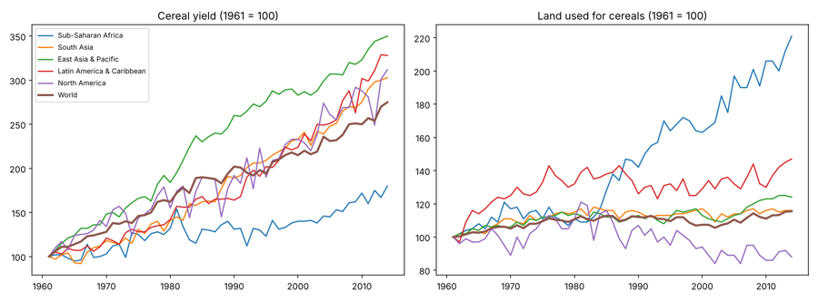
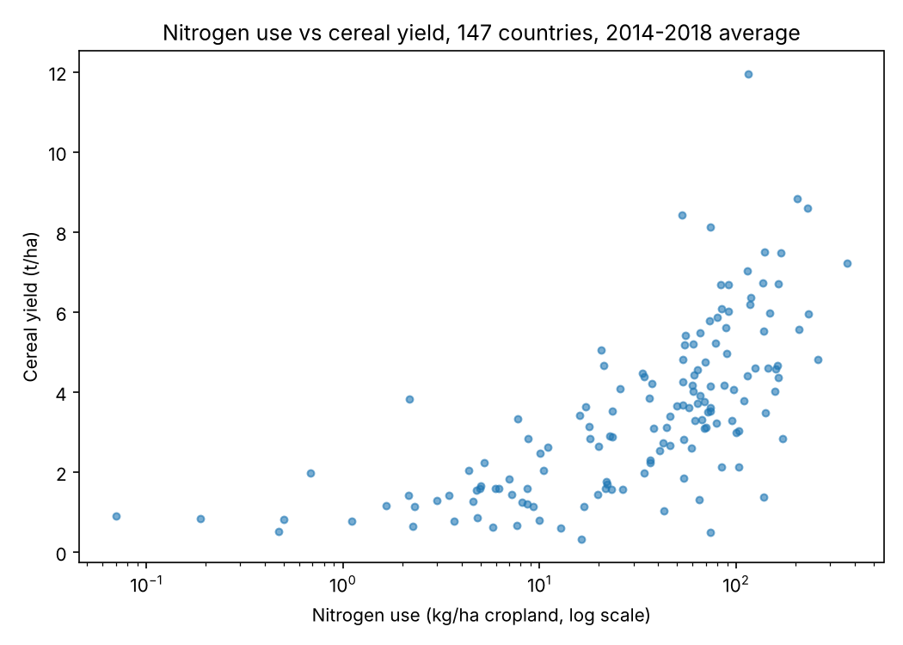
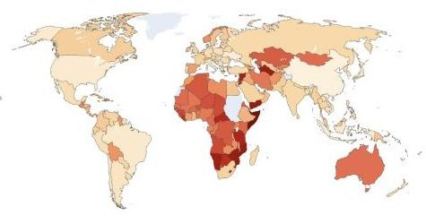

Case study · Food security and agricultural development
Where can more food come from, and who is most at risk?
Food security work starts with two questions: where is production falling behind, and how can farms produce more with fewer inputs? I answered them at three levels, from 60 years of global FAO data to country risk maps and individual farms, with code, tests and plain-language briefs.
The work, step by step
Real published data, open code, and automated tests that confirm the reported results.
Find where growth came from
FAO cereal data 1961–2018: production growth split into yield and land (production = yield × land), by region.
About 88% of world growth came from higher yields. Sub-Saharan Africa more than doubled its cereal area instead, with less than half of its growth from yields: the clearest case for investing in yields there.

Measure yield gaps and input returns
Country yields for maize, wheat and rice against the 90th-percentile country, and median cereal yield by band of nitrogen use.
105 of 168 countries reach less than half the top maize yields (10.1 t/ha). Yield rises steeply from under 25 kg N/ha (1.6 t/ha) to 50–100 kg N/ha (4.2 t/ha), with only 0.4 t/ha more above that: the biggest gains are where fertilizer use is lowest.

Map production risk for 176 countries
FoodSecurity Atlas: FAO and World Bank indicators loaded into SQLite, each ranked across countries in SQL and averaged into a transparent risk index, shown on an interactive map.
Africa's median risk (0.68) is almost twice Europe's (0.36). The highest-risk countries combine low or falling yields, volatile harvests and fast population growth. The index measures production risk, not hunger itself, and the page says so.

Look at efficiency on real farms
My M.Sc. thesis: technical efficiency and eco-efficiency of 420 certified and uncertified cabbage farms in Vietnam, with Data Envelopment Analysis and Tobit regression. AgroCarbon applies the same thinking to farm emissions.
Fertilizer accounted for about 82–98% of the estimated emissions on the Vietnamese vegetable farms, so better nitrogen management is where efficiency and climate goals meet.
What this shows
| Typical requirement | Where you can see it |
|---|---|
| Analysis of FAO and World Bank statistics | Steps 01–03: FAOSTAT-based yields, land and fertilizer; World Bank population data |
| Indicators and composite indices | Step 03: percentile-ranked, equal-weight index with its limits stated |
| Farm-level efficiency analysis | Step 04: DEA and Tobit regression on 420 farms |
| Policy communication | A two-page policy brief and plain-language summaries |
| Data pipelines and reproducibility | SQL views, Python, automated tests that reproduce the headline numbers |
| Languages | English, Nepali and Hindi; German in progress |
Limits: country-level averages hide differences within countries; the risk index uses equal weights and production indicators; data end in 2018 for some series. These are analyses for discussion, not official assessments.
Let's talk
I am completing my M.Sc. in Sustainable International Agriculture at the University of Göttingen and looking for roles in food security, agricultural development and policy research.